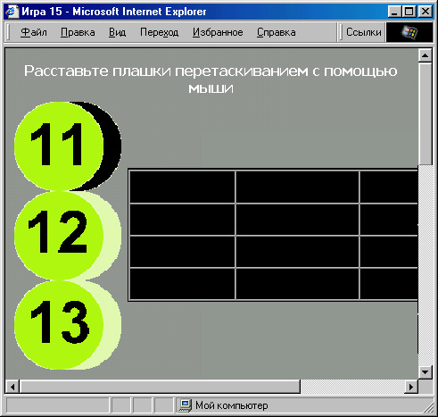
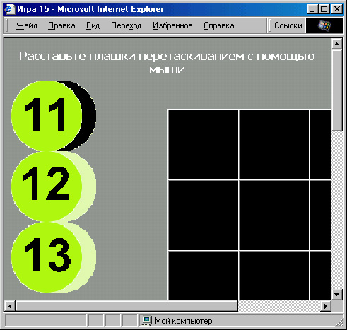
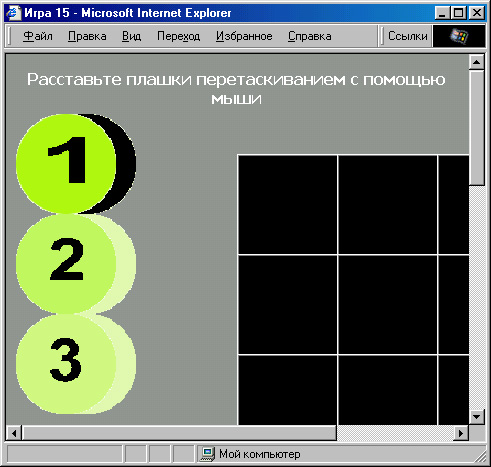
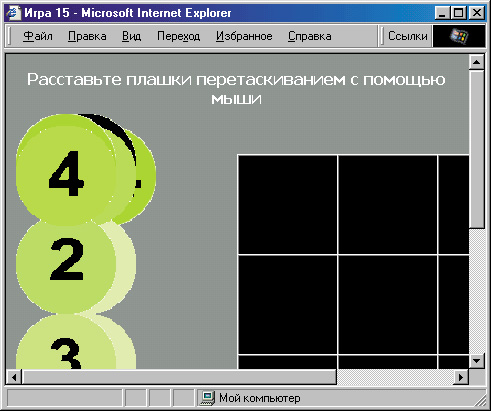

|
|
|
|
Динамическое управление позиционированием элементов
Чтобы все это реализовать, придется использовать позиционирование объектов на экране. Прежде всего, определим позицию блока, в который будет включена таблица (“игровое поле”):
<DIV STYLE="width: 400px; height: 400px; position: absolute;
top: 100px;">
Вероятно, вы обратили внимание на то, что сейчас мы задали только пози- цию блока <DIV> по вертикали (с помощью стилевого свойства top). А каким должно быть свойство left (позиция по горизонтали)? Хотелось бы, чтобы наше игровое поле располагалось по центру, но ведь мы не знаем ширину окна броузера пользователя!
К счастью, в Internet Explorer есть возможность определить ширину окна броузера, прочитав значение свойства document.body.clientWidth. После этого все уже просто. Сначала разделим это значение на 2, чтобы получить пози цию в центре экрана. Поскольку наша таблица будет иметь ширину 400 пикселов, для вычисления позиции ее левого края вычтем из позиции центра экрана половину ширины таблицы, то есть 200:
tstart=document.body.clientWidth/2-200;
В данном примере мы присвоили вычисленное значение переменной tstart. Поскольку оно будет неоднократно использоваться в дальнейшем, полезно объявить эту переменную как глобальную (то есть не внутри какой-либо функции, а в самом начале кода JavaScript). Теперь осталось дать имя нашему блоку <DIV>:
<DIV ID="maintab" STYLE="width: 400px; height: 400px; position: absolute; top: 100px;">
и присвоить его свойству left вычисленное значение:
<SCRIPT LANGUAGE”"JavaScript" TYPE="text/javascript">
var tstart; function mainpos()
{ tstart document.body.clientWidth/2-200;
document.all.maintab.style.left=tstart; )
//--> </SCRIPT>
Приведенная выше функция mainposO должна выполняться сразу после загрузки страницы (иначе пользователь увидит таблицу неизвестно где). Поэтому установим в теге <BODY> уже знакомый нам обработчик событий on Load:
<BODY onLoad="mainpos() ">
Вот теперь при загрузке страницы (а точнее, сразу после нее) наш блок <DIV> , содержащий таблицу, будет отцентрирован. Но как быть с ячейками таблицы? Ведь мы знаем, что если даже в тегах <TD> указать ширину и высоту, эти требования будут восприняты броузером лишь как рекомендательные, и на экране просто не отобразится ни одна ячейка. Если же поместить в ячейки неразрывные пробелы, то строки таблицы получатся мизерной высоты (рис. 7.8).

puc. 7.8. Указание в тегах <TD> высоты и ширины, не приводит к желаемому результату
Что же делать? Есть один прием, который позволяет сделать минималь- ную ширину и высоту ячейки таблицы такой, какой нужно именно нам, а не такой, какой захочет броузер. Дело в том, что при наличии рисунка в ячейке таблицы броузер обязательно расширит границы ячейки так, чтобы рисунок был виден целиком. Поэтому создадим очень маленький графи ческий файл, содержащий целиком прозрачный рисунок (в нашем при- мере был использован прозрачный рисунок размером 4х3 пиксела). Рисунок такого маленького размера будет загружаться очень быстро, прак- тически не влияя на скорость загрузки страницы. Однако в соответствую- щем ему теге <IMG> установим ширину и высоту (с помощью атрибутов WIDTH= и HEIGHT=) такими, какими мы хотим видеть ширину и высоту ячейки таблицы. Таким образом, мы получим как бы пустую ячейку с заданными минимальными размерами!
Вот как можно это сделать в нашем примере:
<TD><IMG SRC="Images/diafanol.gif" WIDTH="100" HEIGHT="100"</TD>
На всякий случай поместим этот рисунок в каждую ячейку таблицы. Теперь давайте поместим изображения плашек слева от игрового поля, расположив их вертикальными рядами по пять штук:
<IMG ID="pl" SRC="Images/digitl.gif" WIDTH="100" HEIGHT="100" BORDER="0" ALT="1" STYLE="position: absolute; top: 120px; left: 10px;">
<IMG ID="p2" SRC="Images/digit2.gif" WIDTH="100" HEIGHT="100" BORDER="0" ALT="2" STYLE="position: absolute; top: 220px; left: 10px;">
<IMG ID="p3" SRC="Images/digit3.gif" WIDTH="100" HEIGHT="100" BORDER="0" ALT="3" STYLE="position: absolute; top: 320px; left: 10px;">
<IMG ID="p4" SRC="Images/digit4.gif" WIDTH="100" HEIGHT="100" BORDER="0" ALT="4" STYLE="pOsition: absolute; top: 420px; left: 10px;">
<IMG ID="p5" SRC°"Images/digit5.gif" WIDTH="100" HEIGHT="100" BORDER="0" ALT="5" STYLE="position: absolute; top: 520px; left: 10px;">
<IMG ID="p6" SRC="Images/digit6.gif" WIDTH="100" HEIGHT="100" BORDER="0" ALT="6" STYLE="position: absolute; top: 120px; left: 30px;">
<IMG ID="p7" SRC="Images/digit7.gif" WIDTH="100" HEIGHT="100" BORDER="0" ALT="7" STYLE="position: .absolute; top: 220px; left: 30px;">
<IMG ID="p8" SRC="Images/digit8.gif" WIDTH="100" HEIGHT="100" t BORDER="0" ALT="8" STYLE="position: absolute; top: 320px; left: 30px;">
<IMG ID="p9" SRC="Images/digit9.gif" WIDTH="100" HEIGHT="100" BORDER="0" ALT="9" STYLE="position: absolute; top: 420px; left: 30px;">
<IMG ID="plO" SRC="Images/digitl0.gif" WIDTH="100" HEIGHT="100" BORDER="0" ALT="10" STYLE="position: absolute; top: 520px; left: 30px;">
<IMG ID="pll" SRC="Images/digitll.gif" WIDTH="100" HEIGHT="100" BORDER="0" ALT="11" STYLE="position: absolute; top: 120px; left: 50px;">
<IMG ID="pl2" SRC="Images/digitl2.gif" WIDTH="100" HEIGHT="100" BORDER="0" ALT="12" STYLE="position: absolute; top: 220px; left: 50RX;">
<IMG ID="pl3" SRC="Images/digitl3.gif" WIDTH="100" HEIGHT="100" BORDER="0"'\ALT="13" STYLE="position: absolute; top: 320px; left: 50rix;">
<IMG ID="bl4" SRC="Images/digitl4.gif" WIDTH="100" HEIGHT="100" BORDER="01- ALT="14" STYLE="position: absolute; top: 420px; left: 50px;">
<IMG ID="pl5" SRC="Images/digitl5.gif" WIDTH="100" HEIGHT="100" BORDER="0" ALT="15" STYLE="position: absolute; top: 520px; left: 50px;">
Результат показан на рис. 7.9. Пока это выглядит не очень красиво, поскольку на виду у пользователя оказался третий ряд плашек (с цифрами от 11 до 15), а остальные расположились под ним. Лучше было бы, если бы наверху оказались плашки с 1 по 5.
Можно, конечно, решить эту проблему, присвоив каждой плашке свое значение стилевого свойства z-index, однако проще изменить порядок сле дования тегов <IMG>. Если сначала написать теги для рисунков плашек с 11 по 15, затем — с 6 по 10 и в конце — с 1 по 5, то при наложении рисун ков те, которые были объявлены позже, окажутся сверху. Кроме того, вполне можно разместить рисунки чуть выше по вертикали:
<IMG ID="pll" SRC="Images/digitll.gif" WIDTH="100" HEIGHT="100" BORDER="0" ALT="11" STYLE="position: absolute; top: 60px; left: 50px;">
<IMG ID="pl2" SRC="Iniages/digitl2.gif" WIDTH="100" HEIGHT="100" BORDER="0" ALT="12" STYLE="position: absolute; top: 160px; left: 50px;">
<IMG ID="pl3" SRC="Images/digitl3.gif" WIDTH="100" HEIGHT="100" BORDER="0" ALT="13" STYLE="position: absolute; top: 260px; left: 50px;">
<IMG ID="pl4" SRC="Images/digitl,4.gif" WIDTH="100" HEIGHT="100" BORDER="0" ALT="14" STYLE="position: absolute; top: 360рх; left: 50px;">
<IMG ID="pl5" SRC="Images/digitl5.gif" WIDTH="100" HEIGHT="100" BORDER="0" ALT="15" STYLE="position: absolute; top: 460px; left: 50px;">

Рис. 7.9. Исходная позиция для расстановки плашек
<IMG ID="p6" SRC="Images/digit6.gif" WIDTH="100" HEIGHT="100" BORDER="0" ALT="6" STYLE="position: absolute; top: 60px; left: 30px;">
<IMG ID="p7" SRC="Images/digit7.gif" WIDTH="100" HEIGHT="100" BORDER="0" ALT="7" STYLE="position: absolute; top: 160px; left: 30px;">
Результат показан на рис. 7.10. Теперь, наконец, подготовительная работа закончена, и нужно реализовать обработку событий, как говорилось выше.
Реакция на нажатие кнопки
Сначала добавим в тег <BODY> обработчики событий, реагирующие на нажатие кнопки мыши (не на щелчок, который состоит из нажатия и отпускания левой кнопки, а именно на нажатие) — onMouseDown, на отпускание кнопки — onMouseUp и на движение указателя мыши — onMouseMove:
<BODY onLoad="mainpos()" onMouseDown="down_it()" onMouseUp="up_it()" onMouseMove="move_it()">

Рис. 7.10. Изменение порядка следования позиционированных элементов <IMG> позволяет изменить их расположение в третьем измерении
Теперь осталось написать функции, которые мы так лихо назначили обработчикам событий. Сначала давайте займемся нажатием кнопки мыши (onMouseDown).
Прежде всего, нам надо определить, была ли нажата кнопка мыши на рисунке одной из плашек. Если нет, то ничего делать не нужно. Как проверить это условие? В Internet Explorer 4+ источник каждого события записывается в свойство window.event.srcElement. Но что нам это дает? Ведь нужных нам рисунков целых 15, и у каждого есть свое уникальное имя (свойство ID=). Неужели придется сравнивать свойство window.event.srcElement id с каждым именем?
Мы совсем забыли, что каждый рисунок плашки представляет собой тег <IMG>. Поэтому мы можем сравнить свойство window.event.srcElement.tagName, содержащее названия тега-источника события, со словом IMG, и в случае удачи перейти к дальнейшим действиям:
function down_it() { if(window.event.srcElement.tagName=="IMG") { // какие-то действия } } Стоп! Но ведь, кроме рисунков плашек, у нас еще есть прозрачный рисунок, расположенный в каждой из шестнадцати ячеек таблицы! А вот его-то нам никуда передвигать совсем не нужно. При этом от рисунков плашек его отличает только свойство SRC=. Придется сравнить это свойство со значением Images/diafanol.gif, и продолжать дальнейшую работу функции лишь в том случае, если совпадение не обнаружится.
Однако если мы напишем:
if ( (window, event. srcElement. tagName s ""IMG") && (window.event.srcElement.src!="Images/diafanol.gif")) {
// какие-то действия }
то в большинстве случаев нас постигнет разочарование: “какие-то действия” все равно будут выполняться, даже если кнопка мыши будет нажата на прозрачном рисунке! В чем же дело?
Оказывается, свойство window.event.srcElement.src в любом случае содержит указание на абсолютное местоположение файла рисунка. Так, например, если эти опыты мы проводим на локальном компьютере, то значением window.event.srcElement.src будет полный путь доступа к файлу, включающий имя диска и родительские папки. Поскольку при разработке страницы, скорее всего, еще нельзя точно предсказать этот путь доступа, да и проверить работу страницы на локальном компьютере тоже нелишне, придется поступить по другому. Воспользуемся тем, что каково бы ни было абсолютное расположение файла, значение window.event.srcElement.src все равно будет заканчиваться его именем — в нашем случае diafanol .gif. то есть символы с 13-го по 5-й от конца строки будут заведомо содержать значение diafanol. Поскольку длина любой строки всегда содержится в ее свойстве length, то мы можем выделить из полного названия файла нужные нам символы, начиная от length-12 и кончая length-4. Выделение части строки можно произвести методом substring:
if((window.event.srcElement.tagName=="IMG")&& (window.event.srcElement.src.substring (window.event.srcElement.src.length-12, window.event.srcElement.src.length-4)!="diafanol")) {
// какие-то действия }
Вот теперь все заработает правильно. Правда, строка условия выглядит очень громоздко. Мы не рекомендуем писать такие строки, поскольку через какое-то время с ними будет трудно разбираться, если вдруг понадобится что-то изменить. Например, в нашем случае можно определить локаль ную переменную 1 и присвоить ей значение window.event.srcElement.src.length. Тогда строка условия будет выглядеть хоть немного компактней:
if((window.eventssrcElement.tagName="IMG") && (window, event .'SrcElement. src.substring (1-12,1-4) != "diafanol"”
Какие же действия нужно осуществить внутри этой функции? Если вы еще не забыли, нам нужно “привязать” рисунок плашки к указателю мыши. Для этого достаточно определить глобальную переменную (мы назвали ее moving), и присваивать ей всегда имя рисунка, который необхо димо передвигать. Если никакой рисунок передвигать не нужно (кнопка мыши отпущена или нажата не на рисунке плашки), можно присвоить переменной moving значение " " (пустая строка). В самом начале сценария эту переменную можно объявить так:
var moving"";
а в теле функции down_it(), которую мы сейчас пишем, будем присваивать ей значение, содержащее имя того рисунка, на котором пользователь щелкнул мышью:
moving=window.event.srcElement.id;
Реакция на перемещение мыши
В принципе, наша функция down_it() уже справляется со своими обязанностями. Теперь давайте займемся функцией moveit( ), которая будет вызываться при движении мыши.
Эта функция должна прежде всего проверить, нужно ли передвигать какой- либо рисунок. Как вы помните, его имя содержится в переменной moving. Так что нужно сначала сравнить значение переменной moving с пустой стро кой и в случае совпадения не предпринимать никаких действий:
function move it() { if (moving!="") { // какие-то действия
} }
Теперь давайте подумаем, что должно быть сделано, если переменная moving содержит имя рисунка, который нужно передвинуть. Очевидно, для того чтобы его передвинуть, нужно изменить его стилевые свойства left и top в соответствии с расположением указателя мыши. Текущее положение указателя мыши можно узнать, прочитав значения свойств window.event.clientX и window.event.clientY.
— Стоп! — скажете вы. — А как узнать, как должен располагаться рису нок относительно указателя мыши? Ведь пользователь может щелкнуть и в центре рисунка, и с краю, и в любом другом месте. Значит, в функции down_it(), которую мы считали уже законченной, нужно еще вычислить координаты указателя мыши относительно рисунка?
— Правильно! Это обязательно нужно сделать, если применять эту технологию для перетаскивания крупных объектов. Но в нашем примере мы позволим себе упростить задачу, воспользовавшись тем, что наши плашки имеют относительно небольшие размеры. При таких размерах будет вполне нормально, если при перетягивании рисунка указатель мыши будет находиться посередине его. Поскольку рисунки наши имеют размер 100х100, нам остается вычесть 50 из каждой координаты указателя мыши и при своить эти значения свойствам left и top рисунка:
document.all[moving].style.pixelLeft=window.event.clientX-50; document.all[moving].style,pixelTop=window.event.clientY-50;
Обратите внимание на то, что для обращения к объекту по его имени, содержащемуся в переменной, необходимо использовать квадратные скобки, то есть писать document.all[moving], а не document.all. moving. В противном случае броузер не сможет найти нужный объект и выдаст сообщение об ошибке . Кроме того, обратите внимание на то, что для корректного изменения координат в Internet Explorer необходимо использовать свойства pixelLeft и pixelTop вместо left и top.
Из эстетических соображений давайте передвинем центр рисунка к указателю мыши уже в функции down_it(), добавив туда две точно такие же строки. Что касается функции moveJt(), то она почти готова. Однако необходимо добавить в нее еще две строки, чтобы предотвратить заранее предопределенную реакцию броузера на какие-либо ситуации:
window.event.cancelBubble = true; window.event.returnValue = false;
Первая из этих строк отменяет так называемое “всплытие” события, то есть возникновение его в элементах страницы, содержащих элемент-источ ник . А вторая строка запрещает броузеру выполнять действия, назначен ные по умолчанию для этого события. В данном случае, если мы не напишем
window.event.returnValue = false;
тo рисунки начнут “тормозиться” уже при небольшом перемещении, после чего броузер может вообще не распознать отпускание кнопки мыши. Мы сейчас не будем вдаваться в подробности того, почему так происходит. Однако запомните, что эти две короткие строчки при обработке событий мыши часто помогают избежать многих неприятностей. Если у вас что-то не получается, проверьте, а не “всплывает” ли какое-нибудь нежелательное событие? И не пытается ли броузер делать что-то “свое” вместо назначенных вами операций?
Реакция на отпускание кнопки
Теперь давайте займемся функцией up_it(), выполняющейся при отпускании кнопки мыши. Собственно говоря, все, что нужно сделать — это проверить, передвигался ли какой-нибудь объект (то есть, содержит ли переменная moving какое-либо имя) и, если это так, присвоить этой переменной пустую строку, что будет означать “освобождение” рисунка: function up_it() ( if (moving!="") moving="";
Однако хорошо бы еще расположить рисунок не где попало, а точно в ячейке таблицы. Поскольку в этом случае его координаты относительно начала таблицы должны быть кратны 100, это довольно легко осуществить. Для этoгo достаточно округлить его до ближайшей сотни. Для округления можно использовать встроенный метод Math.round. Понятно, что он округляет не до сотен, а до целых чисел, поэтому текущие координаты рисунка перед округлением придется разделить на 100, а после округления — умно жить на 100. Кроме того, не забывайте, что кратность 100 мы определяем относительно начала таблицы, которое равно tstart по горизонтали и 100 но вертикали. Поэтому перед делением на 100 нужно еще вычесть из горизонтальной координаты значение tstart, а в конце снова его прибавить. Вот что у нас получается:
document.all[moving].style.pixelLeft= Math.round;(window.event.clientX-50-tstart)/100)*100+tstart+l;
document.all[moving].style,pixelTop= Math.round((window.event.clientY-50)/100)*100+1;
Как видите, все довольно просто. Здесь мы прибавили к каждой коорди нате еще по единице, чтобы рисунки не налезали на сетку таблицы. Кстати, ширину ячеек таблицы (то есть, прозрачного рисунка diafanol.gif) в этом случае тоже необходимо немного скорректировать. Поскольку каждая ячейка таблицы имеет со всех сторон бордюр шириной в 1 пиксел, придется сделать ширину самих ячеек равной не 100, а 98:
Кроме того, неплохо было бы, если бы наши рисунки располагались точно, но сетке таблицы только в ее пределах, а в других частях экрана принимали бы свободное положение. Для этого можно перед округлением досотен проверить, расположен ли рисунок внутри таблицы (или хотя бы рядом с ней):
i f (window.event.clientX>=tstart-50&&window.event,clientY>=50) {
document.all[moving].style.pixelLeft= Math.round((window.event.clientX-50-tstart)/100)*100+tstart+l;
document.all[moving].style,pixelTop= Math.round((window.event.clientY-50)/100)* 100+1;
}
И, наконец, еще один штрих. При перемещении некоторых рисунков может возникнуть ситуация, когда перемещаемый рисунок будет проходить как бы под другим, пропадая на время из видимости. Чтобы этого не возникало, давайте добавим в функцию down_it() еще такую строку:
document.all[moving].style.zlndex=5;
Поскольку у всех остальных элементов значение z-index не изменялось (и, следовательно, равно нулю), мы добиваемся того, что перемещаемый рисунок никогда не будет перекрыт другими объектами. Естественно, при окончании перемещения рисунка ему нужно возвратить исходное значение z-index. Для этого в функцию up_it() добавим строку
document.a 11[moving].style.zlndex=0; Итак, давайте посмотрим, что же у нас получается.
<!DOCTYPE HTML PUBLIC "-//W3C//DTD HTML 4.0 Transitional//EN">
<HTML>
<HEAD>
<TITLE>Иrpa 15</TITLE>
<STYLE> BODY { background-color: #979797; color: #FEFEFE;
text-align: center; font-weight: bold;
font-size: 30рх; font-family: sans-serif; }
</STYLE>
<SCRIPT LANGUAGE="JavaScript" TYPE="text/javascript">
var tstart; var moving="";
function mainpbs( )
{ tstart=document.body.clientWidth/2-200;
document. a.is .rnaintab. style. left=tstart;
function down_it()
{ var 1==window. event. srcElement. src.length;
if((window.event.srcElement.tagName="IMG")&&
(window.event.srcElement.src.substring(1-12,1-4)!= "diafanol"))
{ moving=window.event.srcElement.id;
document.all[moving].style.pixelLeft=window.event.clientX-50; document.all[moving].style.pixelTop=window.event.clientY-50;
document.all[moving].style.zlndex=5; } } function up it() { if (moving!="") {
if (window.event.clientX>=tstart-50&& window.event.clientY>=50) {
document.all[moving].style.pixelLeft= Math.roundf(window.event.clientX-50-tstart)/100)*100+tstart+1;
document.all[moving].style,pixelTop= Math.round((window.event.clientY-50)/100)*100+1;
} document.all[moving].style.zlndex=0; moving=""; }
} function move it() { if (moving!="")
{ document.all[moving].style.pixelLeft=window.event.clientX-50; document.all[moving].style.pixelTop==window.event.clientY-50 ;
} event.cancelBubble = true; event.returnValue = false; }
//—>
</SCRIPT>
</HEAD>
<BODY enLoad="mainpos()" опМouseDown="down it()" onMouseUp="up_it()" onMouseMove="move_it()">
Расставьте плашки перетаскиванием с помощью мыши
<DIV ID="maintab" STYLE="width: 400px; height: 400px; position: absolute; top: 100px;">
<TABLE BGCOLOR="#COCOCO" WIDTH="100%" CELLSPACING="0" CELLPADDING="0" BORDER="1">
<TR>
<TD><IMG SRC="Images/diafanol.gif" WIDTH="98" HEIGHT="98"></TD>
<TD><IMG SRC="Images/diafanol.gif" WIDTH="98" HEIGHT="98"></TD>
<TD><IMG SRC="Images/diafanol.gif" WIDTH="98" HEIGHT="98"></TD>
<TD><IMG SRC="Images/diafanol.gif" WIDTH="98" HEIGHT="98"></TD> </TR> <TR>
<TD><IMG SRC="Images/diafanol.gif" WIDTH="98" HEIGHT="98"></TD>
<TD><IMG SRC="Images/diafanol.gif" WIDTH="98" HEIGHT="98"></TD>
<TD><IMG SRC="Images/diafanol.gif" WIDTH="98" HEIGHT="98"></TD>
<TD><IMG SRC="Images/diafanol.gif" WIDTH="98" HEIGHT="98"></TD> </TR> <TR>
<TD><IMG SRC="Images/diafanol.gif" WIDTH="98" HEIGHT="98"></TD>
<TD><IMG SRC="Images/diafanol.gif" WIDTH="98" HEIGHT="98"></TD>
<TD><IMG SRC="Images/diafanol.gif" WIDTH="98" HEIGHT="98"></TD>
<TD><IMG SRC="Images/diafanol.gif" WIDTH="98" HEIGHT="98"></TD> </TR> <TR>
<TD><IMG SRC="Images/diafanol.gif" HIDTH="98" HEIGHT="98"></TD>
<TD><IMG SRC="Images/diafanol.gif" WIDTH="98" HEIGHT="98"></TD>
<TD><IMG SRC="Images/diafanol.gif" WIDTH="98" HEIGHT="98"></TD>
<TD><IMG SRC="Images/diafanol.gif" WIDTH="98" HEIGHT="98"></TD>
</TR> </TABLE> </DIV>
<IМG ID="p11" SRC="Images/digitll.gif" WIDTH="100" HEIGHT="100" BORDER="0" ALT="11" STYLE="position: absolute; top: 60px; left: 50px;
<IMG ID="pl2 SRC="Images/digitl2.gif" WIDTH="100" HEIGHT="100" BORDER="0" AtlT="12" STYLE="position: absolute; top: 160px; left: 50px;
<IMG ID="p13 SRC-"Images/digitl3.gif" WIDTH="100" HEIGHT="100" BORDER="0" ALT="13" STYLE="position: absolute; top: 260px; left: 50px;">
<IMG ID="pl4" SRC="Images/digitl4.gif" WIDTH="100" HEIGHT="100" BORDER="0" ALT="14" STYLE="position: absolute; top: 36Орх; left: 50px;">
<IMG ID="pl5" SRC="mages/digitl5.gif" WIDTH="100" HEIGHT="100" BORDER="0" ALT="15" STYLE="position: absolute; top: 460px; left: 50px;">
<IMG ID="p6" SRC="Images/digit6.gif" WIDTH="100" HEIGHT="100" BORDER="0" ALT="6" STYLE="position: absolute; top: 60px; left: 30px;">
<IMG ID="p7" SRC="Images/digit7.gif" WIDTH="100" HEIGHT="100" BORDER="0" ALT="7" STYLE="position: absolute; top: 160px; left: 30px;">
<IMG ID="p8" SRC="Images/digit8.gif" WIDTH="100" HEIGHT="100" BORDER="0" ALT="8" STYLE="position: absolute; top: 260px; left: 30px;">
<IMG ID="p9" SRC="Images/digit9.gif" WIDTH="100" HEIGHT="100" BORDER="0" ALT="9" STYLE="position: absolute; top: ЗбОрх; left: 30px;">
<IMG ID="plO" SRC="Images/digitl0.gif" WIDTH="100" HEIGHT="100" BORDER="0" ALT="10" STYLE="position: absolute; top: 460px; left: 30px;">
<IMG ID="pl" SRC="Images/digitl.gif" WIDTH="100" HEIGHT="100" BORDER="0" ALT="1" STYLE="position: absolute; top: 60px; left: 10px;">
<IMG ID="p2" SRC="Images/digit2.gif" WIDTH="100" HEIGHT="100" BORDER="0" ALT="2" STYLE="position: absolute; top: 160px; left: 10px;">
<IMG ID="p3" SRC="Images/digit3.gif" WIDTH="100" HEIGHT="100" BORDER="0" ALT="3" STYLE="position: absolute; top: 260px; left: 10px;">
<IMG ID="p4" SRC="Images/digit4.gif" WIDTH="100" KEIGHT="100" BORDER="0" ALT="4" STYLE="position: absolute; top: ЗбОрх; left: 10px;">
<IMG ID="p5" SRC="Images/digit5.gif" WIDTH="100" HEIGHT="100" BORDER="0" ALT="5" STYLE="position: absolute; top: 460px; left: 10px;">
</BODY>
</HTML>
Результат представлен на рис. 7.11. В принципе, в такую игру уже можно по-настоящему играть. Конечно, этот код можно еще упростить. Правильно, зачем шестнадцать раз повторять тег вставки прозрачного рисунка? Давайте заменим его вложенным циклом JavaScript:
for (var k=l; k<=4; k++) { document.write("<TR>") ;
for (var m=l; m<=4; m++) document.write('<TD> <IMG SRC="Images/diafanol.gif" WIDTH="98" HEIGHT="98"> </TD>') ;
document.write("</TR>");
}

Рис. 7.11. Реализация технологии drag-and-drop: пользователь может перетаскивать плашки с помощью мыши
Результат будет тот же. А если немного подумать, то можно сократить даже код первоначального расположения рисунков плашек, правда, это немного труднее.
Кроме того пока что мы никак не проверяем, не ставит ли пользователь две плaшки в одну и ту же ячейку, а уж о самой игре и говорить нечего. Но ведь мы пока только реализовывали расстановку плашек методом перетаскивания. Запомните рассмотренные в этом разделе приемы, так как они позволяют организовать столь любимую пользователями интерактивность просто на небывалом уровне — вспомните, что одна из функций реагировала у нас буквально на каждое перемещение указателя мыши!
К сожалению, приведенная выше страница будет работать только в Internet Explorer. Если необходимо, чтобы она работала также и в Netscape 6, придется приложить некоторые усилия. Дело в том, что помимо различий в син таксисе доступа к элементам, о котором мы уже говорили (в Netscape используется конструкция document.getElementByld вместо document.all), различия существуют также и в обработке событий. В частности, вместо глобального объекта event в Netscape необходимо использовать временную переменную, которой будет передаваться значение объекта event. Кроме того, вместо свойства srcElement используется свойство target, а свойство returnValue вообще не поддерживается. Выше мы приводили примеры того, как написать код, работающий в обоих популярных броузерах. Вы можете в качестве упраж нения попробовать это сделать и для данного примера, однако из-за обработки событий мыши это будет сложнее, чем в предыдущих случаях.
|
|
|
|